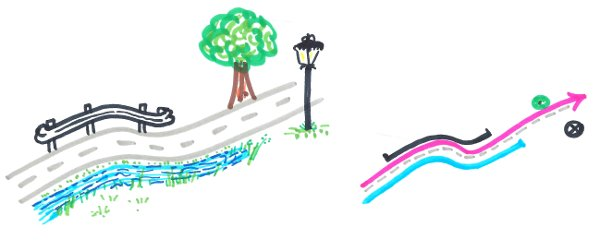

Objets gérés#
Les collectivités gèrent de nombreuses données liées au réseau routier : travaux, réfection d'enrobés, signalisation, taille des haies, etc.
Chaque objet, point ou ligne (multiple), est défini par ses références calculées à partir du réseau routier (voir Concepts). Ces objets sont stockés dans vos propres tables PostgreSQL, appelées objets gérés. Quand le graphe routier est modifié, ces objets doivent être mis à jour.

La couche des objets gérés#
La couche managed_objects liste toutes les tables PostgreSQL impactées par une modification du graphe,
avec la règle de mise à jour à appliquer à chacune :
| id | schema_name | table_name | geometry_type | update_policy_on_graph_change | add_trigger_on_geom_change |
|---|---|---|---|---|---|
| 1 | managed | demo_trees | POINT | references | True |
| 2 | managed | demo_safety_barriers | MULTILINESTRING | geometry | False |
schema_nameettable_name: la table métier,geometry_type: le type de géométrie de la table, par exemplePOINTouMULTILINESTRING,update_policy_on_graph_change: la règle choisie par l'administrateur :references: la géométrie est conservée et les références sont mises à jour,geometry: les références sont conservées et la géométrie est mise à jour.
add_trigger_on_geom_change: siTrue, le trigger qui calcule les références, et, pour les tables de lignes, le trigger qui met à jour les lignes raccordées, sont créés sur cette table par la fonctionroad_graph.add_managed_objects_triggers()(voir plus bas). Valeur par défaut :False.
Chaque table doit avoir les colonnes de références correspondant à son type de géométrie.
Elles peuvent être ajoutées automatiquement avec la fonction road_graph.add_managed_object_reference_fields,
pour une table ou pour toutes les tables de cette couche (voir Ajouter les champs de références).
Ajouter une table métier#
Pour gérer une nouvelle table métier avec le graphe routier :
- préparez la table, avec ses colonnes de références,
- enregistrez-la dans la couche
managed_objects, - ajoutez les colonnes de références si besoin,
- calculez les références de ses entités,
- éventuellement, activez le calcul automatique des références des entités créées ou déplacées par la suite.
Préparer la table#
La table doit avoir :
- une clé primaire,
- une colonne de géométrie
geom, dans le même système de coordonnées que le graphe routier, de type Point pour les objets ponctuels, ou LineString / MultiLineString pour les objets linéaires, - une colonne texte
road_code, - les colonnes de références, qui sont calculées à partir du graphe routier :
| Type de géométrie | Colonnes obligatoires | Colonnes facultatives |
|---|---|---|
| Point | marker_code (entier), abscissa (réel) |
cumulative (réel), offset (réel), side (texte) |
| (Multi)LineString | start_marker_code (entier), start_abscissa (réel), end_marker_code (entier), end_abscissa (réel) |
start_cumulative, end_cumulative (réel), offset (réel), side (texte) |
Par exemple, pour une table d'arbres :
1 2 3 4 5 6 7 8 9 10 11 | |
Les colonnes de références peuvent aussi être ajoutées automatiquement, une fois la table créée,
avec la fonction road_graph.add_managed_object_reference_fields
(voir Ajouter les champs de références).
Importez ensuite vos données dans cette table, par exemple avec les outils de QGIS
(glisser-déposer dans le panneau Explorateur, ou l'algorithme de traitement
Exporter vers PostgreSQL), ou en SQL.
Enregistrer la table#
Ajoutez la table dans la couche managed_objects (table road_graph.managed_objects),
avec son nom de schéma, son nom de table, son type de géométrie et sa règle de mise à jour :
1 2 3 4 | |
Ajouter les champs de références#
La fonction road_graph.add_managed_object_reference_fields ajoute à une table les colonnes de références
listées plus haut, selon son type de géométrie.
Le type de géométrie est lu dans la couche managed_objects si la table y est enregistrée,
ou sinon à partir de sa colonne de géométrie geom.
Par exemple, pour une table de panneaux de signalisation qui n'a pas encore les colonnes de références :
1 2 3 4 5 6 7 8 | |
La fonction renvoie une ligne par colonne, avec son statut :
| field_name | field_type | field_status |
|---|---|---|
| road_code | text | added |
| marker_code | integer | added |
| abscissa | real | added |
| cumulative | real | added |
| offset | real | added |
| side | text | added |
- Les colonnes existantes ne sont pas modifiées : leur statut est
already exists, oualready exists with the type ...si leur type n'est pas celui attendu. La fonction peut donc être lancée plusieurs fois. - Les colonnes facultatives (
cumulative,start_cumulative,end_cumulative,offsetetside) ne sont pas ajoutées si le troisième paramètre vautFalse:road_graph.add_managed_object_reference_fields('managed', 'road_signs', False). - Si les colonnes ne peuvent pas être ajoutées, la fonction renvoie une ligne avec le statut
table not found,geom column not foundorgeometry type not supported: ....
Pour ajouter les colonnes de références à toutes les tables listées dans la couche managed_objects :
1 2 3 4 | |
Tip
La colonne road_code est ajoutée vide. Si elle est toujours vide au moment du calcul des références,
les références sont calculées sur la route la plus proche, et la colonne road_code est remplie.
Remplissez-la au préalable pour imposer la route d'une entité, par exemple à un carrefour.
Calculer les références#
Une fois les entités importées, calculez leurs références à partir de leurs géométries
avec la fonction de la base de données road_graph.update_table_references_from_geometries :
1 2 3 4 5 | |
Les paramètres de la fonction sont le nom du schéma, le nom de la table, et une liste facultative de codes de routes. Pour chaque entité :
- si la colonne
road_codeest remplie, les références sont calculées sur cette route, - si elle est vide, la route la plus proche est utilisée, et la colonne
road_codeest remplie.
Elle renvoie le nombre d'entités mises à jour et leurs identifiants, par exemple :
1 | |
Si vos données contiennent les références mais pas de géométrie, utilisez plutôt la fonction
road_graph.update_table_geometries_from_references, avec les mêmes paramètres,
pour calculer les géométries à partir des références.
Calcul automatique des références#
La fonction trigger road_graph.calculate_managed_object_references calcule les références
d'une entité d'objet géré à chaque fois qu'elle est insérée ou que sa géométrie est modifiée.
La table doit être listée dans road_graph.managed_objects, et avoir une colonne road_code et une colonne geom.
La fonction road_graph.add_managed_objects_triggers() crée ce trigger, nommé
trg_calculate_managed_object_references, sur chaque table listée dans road_graph.managed_objects
dont la colonne add_trigger_on_geom_change vaut True.
Pour les tables de lignes et multilignes, elle crée aussi le trigger
trg_update_managed_object_linked_geometries
(voir Mise à jour automatique des lignes raccordées).
Lancez-la après avoir ajouté de nouvelles tables dans la couche des objets gérés, ou après avoir coché cette colonne :
1 | |
Elle peut être lancée plusieurs fois : chaque trigger n'est créé que s'il n'existe pas déjà.
Décocher add_trigger_on_geom_change ne supprime pas un trigger existant.
La fonction renvoie une ligne par trigger, avec son statut,
ou une ligne sans nom de trigger quand aucun trigger ne peut être créé pour la table :
| schema_name | table_name | trigger_name | trigger_status |
|---|---|---|---|
| public | demo_painting | trg_calculate_managed_object_references | created |
| public | demo_painting | trg_update_managed_object_linked_geometries | created |
| public | demo_trees | trg_calculate_managed_object_references | already exists |
| public | demo_nogeom | geom column not found | |
| public | missing_table | table not found | |
| public | demo_signs | not requested |
Pour chaque table, le trigger créé est équivalent à :
1 2 3 4 | |
Mise à jour automatique des lignes raccordées#
La fonction trigger road_graph.update_managed_object_linked_geometries garde les lignes raccordées
quand la géométrie d'une ligne est modifiée : les autres lignes de la même table et de la même route
dont le point de début ou de fin touchait (tolérance de 5 cm) le point de début ou de fin de la ligne avant sa modification
sont raccourcies ou prolongées pour rester raccordées à celle-ci :
- une ligne en amont reçoit les nouvelles références de début de la ligne comme références de fin,
- une ligne en aval reçoit les nouvelles références de fin de la ligne comme références de début.
Leur géométrie est recalculée à partir de leurs références avec la fonction
road_graph.get_road_substring_from_references, en conservant leur décalage et leur côté.
Les cumuls sont aussi mis à jour si la table a les champs start_cumulative et end_cumulative.
Une ligne raccordée n'est pas modifiée si la ligne modifiée la recouvre désormais entièrement.
La table doit être listée dans road_graph.managed_objects avec un type de géométrie linéaire, et avoir les champs
road_code, start_marker_code, start_abscissa, end_marker_code et end_abscissa.
La fonction road_graph.add_managed_objects_triggers() crée ce trigger sur les tables de lignes
dont la colonne add_trigger_on_geom_change vaut True. Il est déclenché après la modification de la géométrie,
pour que les références de la ligne modifiée aient déjà été calculées, par exemple par le trigger
trg_calculate_managed_object_references. Il est équivalent à :
1 2 3 4 | |
Les lignes raccordées ne sont pas modifiées quand une ligne est découpée ou fusionnée avec les actions Lizmap, quand les objets gérés sont mis à jour à partir du graphe routier, ou quand la session d'édition est fusionnée.
Règles de mise à jour#
Quand l'utilisateur fusionne les données de la session d'édition, chaque objet impacté est automatiquement mis à jour selon la règle choisie par l'administrateur :
- les objets ponctuels ne sont souvent pas déplacés, mais leurs références doivent être mises à jour, par exemple un panneau de signalisation.
- les objets linéaires (multiples) doivent souvent suivre les modifications : les points de début et de fin sont conservés et seuls les sommets intermédiaires sont modifiés, par exemple des travaux de peinture.
Pour que la fusion reste rapide sur les routes longues, seuls les objets qui peuvent être impactés par les modifications sont mis à jour (voir Impacts des modifications sur les références) :
- les objets situés à moins de 50 m des tronçons modifiés,
- si la géométrie de la route a changé, les objets situés en aval du premier tronçon modifié :
jusqu'à la fin de la route si la table a un champ
cumulative, ou sinon jusqu'à la dernière borne des tronçons modifiés, - les objets situés entre une borne modifiée et la borne précédente.
Un tronçon seulement coupé par un nœud, par exemple à un nouveau carrefour, ou dont seuls les attributs ont changé, ne modifie pas la géométrie de la route. Les autres objets conservent leurs références et leurs géométries.
Si la géométrie d'un objet ne peut pas être calculée à partir de ses références, par exemple quand ses références de fin sont avant ses références de début, l'objet n'est pas mis à jour et un avertissement est affiché, mais la fusion n'est pas annulée.
L'algorithme Mettre à jour les objets à partir du graphe routier peut aussi être lancé manuellement sur une couche donnée,
avec les paramètres suivants :
Méthode de modification:Modifier les géométriesouModifier les références,Mise à jour des géométries - Préserver le point de départ et d'arrivée:NonouOui.
Exemple : impacts d'une modification du graphe#
La route D613 porte deux objets métier :
- un arbre, dans la table
demo_treesavec la règle de mise à jourreferences, situé àPR 43 + 450.53 m, - une glissière de sécurité, dans la table
demo_safety_barriersavec la règle de mise à jourgeometry, dePR 43 + 120 màPR 45 + 18 m.
La route est rectifiée entre la borne 43 et l'arbre : dans une session d'édition, un sommet du tronçon est déplacé à 40 m de l'axe de la route. Le tronçon, et donc la route, devient plus long de 46,71 m (de 563,30 m à 610,01 m).
Quand la session d'édition est fusionnée, les deux objets sont mis à jour selon leur règle :
| Objet | Règle de mise à jour | Avant la fusion | Après la fusion |
|---|---|---|---|
| Arbre | references |
PR 43 + 450.53 m |
PR 43 + 497.24 m : l'arbre n'a pas bougé, mais il est maintenant 46,71 m plus loin de la borne 43 |
| Glissière de sécurité | geometry |
de PR 43 + 120 m à PR 45 + 18 m, longueur 1 843,31 m |
Mêmes références. La géométrie est recalculée et suit le nouveau tracé de la route : longueur 1 889,57 m |
- Pour l'arbre, un objet réel sur le terrain, la géométrie est juste et les références sont mises à jour.
- Pour la glissière de sécurité, les références sont conservées : ses points de début et de fin restent aux mêmes endroits, puisque les bornes n'ont pas bougé, et la géométrie entre les deux suit la route rectifiée.
Les objets mis à jour sont listés dans la colonne last_updated_objects_ids de la couche managed_objects,
et sont affichés par la couche vm_managed_objects (voir ci-dessous).
Derniers objets mis à jour#
La couche vm_managed_objects affiche, pour chaque table gérée, les objets mis à jour par la dernière fusion
d'une session d'édition, sous la forme d'un tampon de 10 m autour d'eux. Elle permet de voir rapidement les objets impactés.
Cette couche est une vue matérialisée basée sur la vue road_graph.v_managed_objects,
dont le calcul peut être lent. Elle est rafraîchie automatiquement à la fin de la fusion
d'une session d'édition. Pour la rafraîchir manuellement, par exemple après avoir lancé l'algorithme
Mettre à jour les objets à partir du graphe routier, utilisez :
1 | |